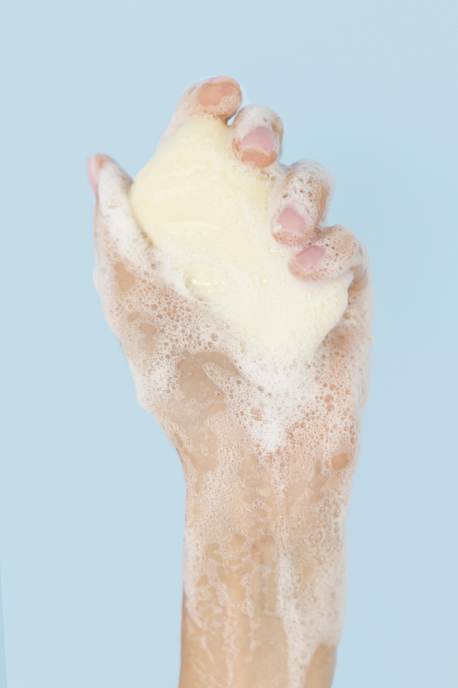

It is normal to feel some nervousness and anxiety before your tattoo appointment, if you have any questions beforehand that are not answered here, do not hesitate to ask.
It is important to have a healthy, nourished body when you come in for your tattoo to ensure that you are feeling your best during and after the session.
Drink lots of water and have a decent meal before your appointment.
You may bring water and snacks to your appointment although I do ask that you do not bring anything with peanuts as I have a peanut allergy!
You may bring some entertainment for yourself if you would like, some like to bring a book, work, handheld video games, etc.
I do ask that if you plan on watching videos or movies, please bring headphones as the noise can be disturbing to others in the shared space.
I am happy to chat throughout our session, although the tattoo may take a bit longer. If you prefer to sit quietly during the session, I have no problem with that as well, please let me know!
You may bring some entertainment for yourself if you would like, some like to bring a book, work, handheld video games, etc.
I do ask that if you plan on watching videos or movies, please bring headphones as the noise can be disturbing to others in the shared space.
I work in an open, shared space at our shop. If privacy is preferred during our session, accommodations can be made to make sure you are feeling comfortable and safe.

Skin Prep
Please come in with clean, moisturized skin. There is no need to shave the area as I will do that for you before we place the stencil.
Wear comfortable clothing that exposes the area being tattooed. For example, if you are getting a tattoo on your leg, wear shorts or loose pants that can be rolled up.
If you are getting a tattoo on your back, wear a button up or zip up that can be worn backwards.
Aftercare
If Tegaderm was applied to your new tattoo, remove the bandage 24-48 hours later.
Remove the bandage in the shower or under warm running water by slowly and gently peeling from a corner. Wash thoroughly with unscented soap for 20-30 seconds before rinsing.
Repeat until the tattoo is completely clean to ensure any blood or plasma is removed. If the tattoo is not cleaned well enough premature scabbing or infection can occur.
Pat the area dry with a CLEAN towel.
If Saran Wrap was used to bandage your tattoo, remove the bandage no longer than four hours later. Wash with unscented soap for 20-30 seconds before rinsing.
Repeat until the tattoo is completely clean to ensure any blood or plasma is removed. If the tattoo is not cleaned well enough- premature scabbing or infection can occur.
Pat the area dry with a CLEAN towel.
Allow your tattoo to breathe for the first couple days, once it starts to feel dry, itchy or irritated, apply a thin layer of unscented lotion (typically around day 3).
I recommend using Lubriderm, Aveeno or Aquaphor.
It is very important to keep your new tattoo clean during the healing process. Clean your tattoo twice a day until fully healed. This may take three to four weeks depending on the size, style and placement.
If you do any activities that cause sweating, wash your tattoo immediately afterwards to eliminate any harmful bacteria sitting on your skin.
Wear clean clothing if it is going to be covering the tattoo and make sure your bedsheets are clean.
Don'ts
Do not submerge your tattoo in water during the healing process. For example: hot tubs, baths, swimming pools, saunas or steam rooms.
Do not allow your tattoo to be exposed to the sun. Tanning or unintentional sun exposure can cause fading and damage to the tattoo,
it is best to wait at least a couple weeks after the tattoo is fully healed before showing it off on sunny days.
Do not scratch or pick your tattoo during the healing phase. It is normal to experience some itchiness and irritation during the healing process, picking at it or scratching it can cause scarring and fading.
A light slap with clean hands can help alleviate some of the itching.
Similarly, do not wear rough clothing items that may cause friction and irritate the tattoo.